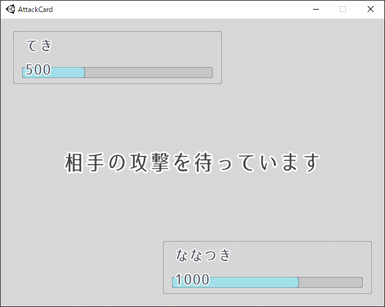

HPバーを表示
こんにちは。ななつきです。
次回予告の 時間経過で、ターンを自動終了させる をやろうとしたのですが、ターンの残り時間はバーで表示したいなと思ったので、事前準備としてHPバーを表示させました。
画面の様子

どんな実装か
sliderを使っただけのシンプルな実装です。
Sliderを追加Handle Slide Areaを削除Fill AreaとFillのLeftとRightを0に書き換える- Sliderの
InteractableをOFFにする ※これを設定しないとユーザーがバーを操作できてしまいます。
これだけでバーは完成です。色とか高さは好みで調整しました。
後は、 Scriptで Slider の MaxValue と Value を設定すると、思い通りに表示できます。
次回予告
次こそは、今回作成したバーを使って 時間経過で、ターンを自動終了させる を進めていきます。